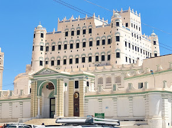

متحف سيئون (قصر الكثيري)
الموقع: مدينة سيئون - حضرموتيقع المتحف داخل قصر سيئون الشهير، والذي يُعد واحداً من أكبر المباني المبنّية من الطين في العالم. بني القصر ليكون مقراً للسلطان الكثيري، وتم تحويل أجزاء واسعة منه إلى متحف رسمي يضم أقساماً متخصصة في الآثار والتراث الشعبي الحضرمي.
يحتوي المتحف على مجموعات قيمة من المكتشفات الأثرية لموقع "ريبون" والوديان المجاورة، إضافة إلى معرض وثائقي وصوري يوثق الحياة الاجتماعية والثقافية والصناعات التقليدية التي تميزت بها وادي حضرموت عبر العصور.